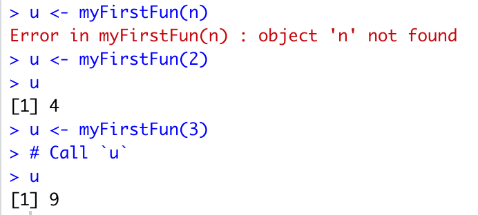

8 Packages and Functions
8.1 Learning objectives
After this lecture, you should be able to:
- explain what a function is
- read and understand the basic syntax of a function in R
- use this syntax to call a function
- use this syntax to build your own function
- test your function
- install packages in R
- load libraries in R
8.2 What is a function?
Why build code several or a hundred times when you can build it once and then call and run it as many times as you want? The answer is, don’t! A function allows you to perform an action multiple times in R by calling it and applying it in similar contexts.
For instance, if you build a function that checks the class of all vectors in a dataframe, you can name this function and then apply it to do the same operation with any other dataframe. Or, if you build a function that graphs the correlation between two numeric vectors and exports this graph to a .png file, you can call this same function and apply it to two other vectors, again and again as needed. Functions can greatly increase the efficiency of your programming, and allow you to create flexible and customized solutions.
8.3 What is the basic syntax of a function in R?
The basic syntax of a function in R, or the way it should be written so that R recognizes it and applies it do perform actions, is usually stated as follows:
function_name <- function(argument_1, argument_2, ...) {
Function body
}
What this does not demonstrate is that there are actually two steps to a function: building it, and applying it. We will look at both steps in the following code from DataCamp:
8.4 Step 1: Building a function
myFirstFun<-function(n)
{
# Compute the square of integer `n`
n*n
}The code chunk builds the function, setting “myFirstFun” as the name, or variable, to which they have assigned the function. The function itself runs from the word “function” down through the closing curly brace.
What is an argument? In the above example, “(n)” is the argument. R looks for this argument (in this case, “n”) in the body of the function, which in this case is n*n.
When we run the above script, the function is saved as an object into the global environment so that it can be called elsewhere, as demonstrated in the code chunks below.
The function has no effect unless you apply it. Until that happens, the function will do nothing but wait to be called.
8.5 Step 2: Calling the function
The code chunk below calls “myFirstFun(n)” and tells R to assign the results of the operation the function performs (n*n) to the variable “u.” But if we run this code as it is (with “n” in the parentheses), we will get an error (unless we have previously assigned “n” as a variable with a value that will accept the operation to be performed — so “n” needs to be a number in this case so that it can be multiplied). We do not actually want to perform the function on the letter “n” but rather, on a number that we will insert in the place of “n.”
We can apply this function by setting “n” as a number, such as 2, in the example below.
# Call the function with argument `n`
u <- myFirstFun(2)
# Call `u`
uOnce we have changed “n” to a number, R then performs this operation and saves the result to a new variable “u.” We can then ask R to tell us what “u” is, and R returns or prints the results of the function, which in this case, is the number 4 (2*2).
The image below shows the results we get if we attempt to run the function without changing the argument “n” to a number (giving us an error), and the results when we change “n” to the number “2” which assigns the result of the function (4) to “u,” or the number “3” which assigns the result of the function (now 9) to “u.”

It is important to understand that “n” is an argument of the function “myFirstFun.” R does not consider “n” a variable, but it acts like a variable because it can change as you call the function into different contexts. To R, “u” and “myFirstFun” are variables because they are names to which values and other content are assigned.
Here is another example of a function with one argument:
Step 1: Build the function In the code below, we will build a function that checks the classes of all vectors in a dataframe.
#build function with one argument (variable)
check_class <- function(data) {
lapply(data, class)
}Step 2: Call the function in one or more contexts. In the code below, we will call the function we built above and apply it to two different datasets. Just as we saw in the example above where we inserted the numbers 2 or 3 in place of “n,” we will insert the name of the datasets we want to use in place of the word “data” to call the new function we have built.
- Note: you will need to load the built-in R datasets “mtcars” and “iris” in order to test the code below.*
#run check_class function on two different dataframes
check_class(mtcars)
check_class(iris)8.6 A function can have more than one argument
A function works similarly when it has two or more arguments.
Let’s say we only want to look at the first vector or column in the dataframe “mtcars.” We would write a line of code that looks like this:
#pull the values of the first column /vector in the dataframe "mtcars"
mtcars[1]But if we wanted to create a function that looks at any column/vector in any dataframe, we could write a function that looks like this:
#build function with two arguments (variable)
one_column <- function(data, x) {
data[x]
}Note: if we want to tell a user what kind of input we want to include, we could instead do something like function(dataset, column_position) or function(dataset, column_name).
Once we have run the above function (telling R to save it to the global environment), we would then call this new function, which we have named one_column, and apply it to various dataframes, and telling R which column or vector in each dataframe we want to view.
#run one_column function on two different dataframes
one_column(mtcars, 1)
one_column(iris, 2)#Packages
A package is a set of functions that other users and developers have made that allow R users to perform various operations. As with many applications and software, some R packages are well crafted, documented, and updated frequently, while others are not. You will want to use your best judgment and choose packages that you think will help you in your work, but will remain stable and functional. Try adding the packages below:
dplyr
wakefield
rlang
Go to Tools > Install Packages in RStudio, search for the functions, and then follow the steps to install them.
Once you have installed them, you will then need to load the libraries into your R environment by using the following code:
#load libraries
library(dplyr)
library(wakefield)
library(rlang)Click here to find out more about dplyr Click here to find out more about wakefield Click here to find out more about rlang
If you have installed the above packages and loaded their libraries, you can then create a function that uses the table you made in the earlier session, “Introduction to R,” to add five rows of data, add a logical vector with randomly assigned logical values, and save this as a new table. Your function might look something like this code below. The comment tags indicate what each line of the function will do.
Note: you will need to load in your data for my.table with the initial 15 rows before proceeding with the next steps.
#Step 1: Build a function that adds a logical vector with randomly assigned TRUE/FALSE values
make_logical.vec <- function(dataset, new.col) {
#make logical vector with random values
vector_1 <- r_sample_logical(15, prob = NULL, name = "new.vector") %>% as.logical()
#tell R to read input for the name of new.col so that we can assign this name to the vector/column
colName = quo_name(new.col)
#add our new vector, with the name we have specified, to the dataset
dataset %>% mutate(!!quo_name(colName) := vector_1) #create new
}#Step 2: Call our new function ‘make_logical.vec’ and assign the results to the table ‘my.data.’
my.data <- make_logical.vec(my.data, "logical.vec")Note: If we call the function, setting the dataset to ‘my.data’ and the name of the new vector to ‘logical.vec,’ it will create the dataframe but will only print it for us in our console. If we want to actually save the new dataframe to update our existing dataframe, we need to reassign it to ‘my.data,’ so that the updated dataframe replaces the original dataframe.
As we can see in the code above, a function can contain more than one variable, and can include several or many lines of code and perform many operations. The above example demonstrates this, and also shows that packages such as as the ones we have loaded here, while optional for working in R, can allow you to call many useful functions.
8.7 Using a package and function to graph data and export a .png
We can install and load the ‘ggplot’ or ‘ggforce’ package to graph data from a dataframe and export the graph to a file. For example, below we can build a function that graphs the data from two columns/vectors, and then generates a .png file.
We start by loading the package that contains the plotting functions we want to use:
Note: if you have not installed ggforce already, you will want to do that now.
#graph distance and time from our.data
library(ggforce)Next, we could build a function that looks like this:
# write function that graphs two variables from dataset
graph_data <- function(data, column1, column2, n) {
distances <- (data %>% filter(column1 <= "n")) %>%
ggplot(aes(column2, column1)) +
geom_point() +
geom_smooth(method = "lm", se = FALSE)
png("graph.png")
print(graph)
dev.off()
}Lastly, we can call the above function, and apply it to the dataframe, my.table, to compare distance and time of travel.
graph_data(my.data, my.data$distance.mi, my.data$time.min, 14.0)The above function generates a .png that looks like this:

8.8 Saving functions and calling them from another file
You can save the functions you build to a separate file, and then load these as a source. For example, I might save my functions to an R script, called “functions.r.” I can then load these sources along with my packages into my R environment.
Note: Although we loaded libraries as we went through this lesson, the best practice is to run your packages and source files at the very beginning of your new R script, as shown in the example that follows.
library(dplyr)
library(wakefield)
library(rlang)
library(ggforce)
source("functions.r") The above code will allow you to call functions that are saved in these libraries and in the functions.r file.